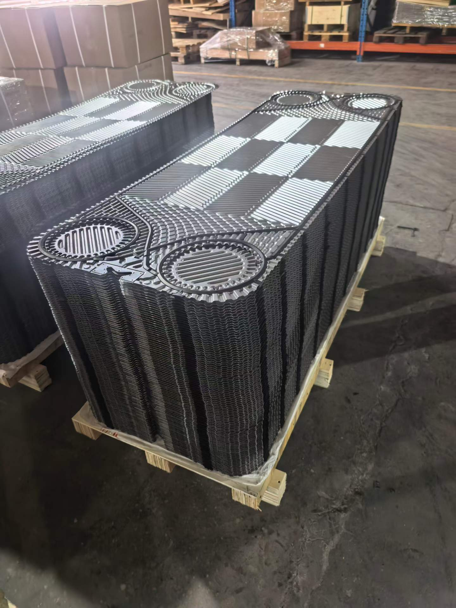

Marine Central Plate Cooler Maintenance, Cleaning & Care: Operation Guide & Precautions
Introduction
The Central Cooling System (CCS) is a core component of modern ship propulsion systems, and the Central Plate Cooler is its key equipment. It transfers heat generated by the main engine, generators, air compressors, and other machinery to seawater, ensuring all ship systems operate within safe temperature ranges.
In the harsh engine room environment, plate coolers face ongoing challenges from seawater corrosion, scaling, biofouling, and vibration. Regular maintenance and proper cleaning procedures directly determine equipment heat transfer efficiency, service life, and vessel operational safety.

1. Structure and Operational Characteristics of Marine Central Coolers
1.1 System Role
A marine central cooling system typically consists of two circuits:
| Circuit | Medium | Function |
|---|---|---|
| Freshwater circuit (primary side) | Treated freshwater | Circulates to cool main engine, generators, etc. |
| Seawater circuit (secondary side) | Seawater | Removes heat from freshwater via the central plate cooler |
The central plate cooler sits between freshwater and seawater, enabling efficient heat exchange.
1.2 Unique Characteristics of Marine Coolers
Compared to land-based plate heat exchangers, marine central coolers have these distinctive features:
- High seawater corrosion risk — Chloride ions in seawater pose serious pitting corrosion risk to stainless steel plates
- Rapid scaling — Calcium, magnesium ions, and microorganisms in seawater scale quickly at elevated temperatures
- Vibration environment — Continuous ship motion can loosen bolts and displace gaskets
- Space constraints — Engine room spaces are compact, making disassembly challenging
- High safety requirements — Cooling failure can cause main engine shutdown, endangering navigation safety
2. Daily Inspection and Preventive Maintenance
2.1 Daily Inspection Checklist
| Item | Method | Normal Range | Abnormal Handling |
|---|---|---|---|
| Inlet/outlet temperature | Read thermometer/sensor | Freshwater ΔT 8~12°C | Reduced ΔT → scaling |
| Inlet/outlet pressure | Read pressure gauge | ΔP < 1.5× design value | Increased ΔP → blockage |
| External leakage | Visual inspection | No dripping | Leak found → tighten or replace gasket |
| Vibration & noise | Audible/tactile | Smooth operation | Abnormal → check fixings |
Key indicator: When the freshwater-seawater temperature difference gradually decreases and pressure drop gradually increases, plate surfaces have begun to foul — schedule cleaning immediately.
2.2 Weekly Inspection Items
- Clamping bolt check — Use a torque wrench to check each bolt, ensuring clamping dimension meets nameplate specifications
- Pipe connections — Inspect all flanges and joints for looseness or corrosion
- Drain valves — Operate drain valves to confirm they are clear and bleed accumulated air
- Sacrificial anodes (if equipped) — Check anode consumption levels and replace if necessary

2.3 Monthly/Quarterly Inspection
- Temperature sensor calibration — Compare against standard thermometer; calibrate if deviation exceeds ±1°C
- Insulation inspection — Confirm no damage, moisture intrusion, or saturation
- Grounding and anti-corrosion check — Measure grounding resistance; inspect anti-corrosion coating
3. Plate Cooler Cleaning Methods
3.1 Determining When to Clean
Arrange cleaning immediately if any of the following occur:
- Reduced heat exchange ΔT — Under same operating conditions, freshwater outlet temperature continuously rises (insufficient heat exchange)
- Significantly increased pressure drop — Exceeds 1.3~1.5× design value
- Insufficient flow rate — Flow through the cooler drops noticeably at rated pump operation
- Scheduled maintenance — Even without obvious abnormalities, cleaning is recommended every 6~12 months
3.2 Cleaning-In-Place (CIP)
Suitable for light fouling — no equipment disassembly required.
Operating procedure:
Step 1: Isolate the equipment
├── Close seawater side inlet and outlet valves
├── Close freshwater side inlet and outlet valves
└── Open drain valves, discharge residual medium
Step 2: Connect cleaning system
├── Connect cleaning pump and tank to cooler cleaning connections
├── Ensure cleaning solution flows opposite to normal operating direction (counterflow cleaning is more effective)
└── Cleaning solution flow rate: 1.2~1.5× normal operating flow
Step 3: Circulate cleaning
├── Solution temperature: 40~60°C (warm water accelerates chemical reaction)
├── Circulation time: 2~4 hours (depending on fouling severity)
└── Sample every 30 minutes to test pH and contaminant concentration
Step 4: Neutralize and rinse
├── Drain cleaning solution
├── Flush repeatedly with clean water until effluent pH is neutral
└── Check rinse water clarity
Cleaning solution selection:
| Fouling Type | Recommended Solution | Concentration | Notes |
|---|---|---|---|
| Calcium/magnesium scale | Sulfamic acid / citric acid | 5~10% | Control temperature < 60°C |
| Rust / iron oxides | Hydrochloric acid + inhibitor | 5~8% | DO NOT use HCl on austenitic stainless steel! |
| Biofilm / slime | Alkaline cleaner (NaOH) | 2~5% | Combine with non-ionic surfactant |
| Oil / grease | Alkaline degreaser | 5~10% | Anionic / non-ionic surfactant |
⚠️ CRITICAL WARNING: Hydrochloric acid MUST NOT be used to clean stainless steel plates (304/316/316L)! Chloride ions in HCl cause stress corrosion cracking and pitting in austenitic stainless steel. Use sulfamic acid, citric acid, or nitric acid instead.
3.3 Mechanical Disassembly Cleaning
Used when severe fouling persists or chemical cleaning is ineffective.
Operating procedure:
Preparation:
- Close all inlet/outlet valves, drain medium
- Disconnect pipes connected to the cooler (or leave space via flexible connections)
- Prepare tools: torque wrench, stainless steel wire brush, high-pressure washer, feeler gauge, gasket adhesive
- Prepare consumables: new gaskets (matched to plate model), lubricating grease
Disassembly steps:
1. Measure and record original clamping dimension A
(Mark original positions on all four tightening bolts)
2. Loosen nuts in diagonal sequence
├── Never fully loosen one side first (plate pack will tilt)
├── Follow diagonal order, loosen 1/4 turn each time
└── Observe movable pressure plate movement for balance
3. Remove movable pressure plate
└── Use lifting equipment for large coolers
4. Remove plates one by one
├── Remove sequentially from movable side to fixed side
├── Note plate orientation marks (arrows or numbers)
└── Place plates flat on wooden or rubber padding (do not stack directly)
Plate cleaning:
1) High-pressure water washing (preferred method)
- Water pressure: 80~150 bar (depending on plate thickness and scale hardness)
- Water temperature: 40~60°C warm water for better results
- Nozzle: Fan nozzle, 25~40° angle
- Washing direction: Along the corrugation pattern, from center outward
2) Chemical soaking
- Place removed plates in cleaning tank
- Use 5~10% sulfamic acid solution
- Soaking time: 30 minutes to 2 hours
- Check plate surface condition every 20 minutes
3) Manual brushing (after chemical soaking)
- Use stainless steel wire brush or nylon brush ONLY
- NEVER use carbon steel wire brush (embedded carbon steel particles cause galvanic corrosion on stainless steel)
- Brush along corrugation direction; do not scrub forcefully across the pattern
4) Final rinse
- High-pressure clean water rinse until no residue remains
- Visually inspect each plate for surface cleanliness
- Pay special attention to corrugation grooves and port-hole areas
Plate inspection:
- Light transmission method to detect pitting corrosion (hold flashlight against back of plate)
- Inspect plate edges and port-hole areas for cracks (magnifying glass or dye penetrant)
- Measure plate thickness at key areas (ultrasonic thickness gauge)
- Check corrugation deformation (compare with new plate of same model)
Plates with pitting corrosion or cracks must be replaced — they cannot be repaired or reused.
4. Gasket Inspection and Replacement
Gaskets are the most aging-prone component of plate heat exchangers, and aging accelerates in marine environments.
4.1 Common Causes of Gasket Failure
| Cause | Symptoms | Preventive Measures |
|---|---|---|
| Thermal aging | Hardening, cracking, loss of elasticity | Replace regularly (2~4 years) |
| Chemical corrosion | Swelling, softening, sticky flow | Choose media-resistant grade |
| Mechanical damage | Fracture, extrusion deformation | Do not over-tighten |
| Microbial attack | Rough surface, reduced strength | Periodic sterilization |
4.2 Gasket Replacement Procedure
Key points for replacing gaskets on Alfa Laval M10 / M15 / M20 and other mainstream models:
Remove old gasket:
- Use plastic scraper (NOT metal) to peel old gasket from gasket groove
- Stubborn adhesive residue can be soaked with acetone or dedicated adhesive remover, then removed
- Check that gasket groove is clean and free of residue
Install new gasket:
- Confirm new gasket model fully matches the plate (Alfa Laval genuine gaskets typically have model markings)
- Alfa Laval ClipGrip™ clip-on gaskets can be pressed directly into the gasket groove
- Adhesive gaskets require the groove to be clean, then evenly apply adhesive
- Start from the port-hole area, install segment by segment along the groove
- Let the adhesive cure for 15~30 minutes after installation
Gasket installation check:
- Gasket protrusion is even with no twisting
- Port-hole sealing rings are complete and intact
- Segmented gasket joints are smooth with no gaps
5. Reassembly and Commissioning
5.1 Plate Pack Reassembly
1. Install plates in original numbered sequence
├── Note orientation of herringbone corrugation (alternating arrangement)
└── Gasket side of each plate faces the fixed pressure plate
2. Check plate pack parallelism with feeler gauge
└── Clamping gap difference at four corners ≤ 1mm
3. Install movable pressure plate
├── Pre-tighten bolts in diagonal sequence
└── Gradually tighten to nameplate dimension A in 2~3 stages
Note: Clamping dimension A must precisely match the nameplate specification — do not rely on intuition. Over-tightening damages gaskets and plates; under-tightening causes leakage.
5.2 Pressure Test
- Hydrostatic test: Fill with clean water at 1.3× design pressure, hold ≥ 30 minutes
- Inspection focus: No leakage at all gasket seals and port-hole seals
- Air tightness test (recommended): Pressurize with 0.1~0.2 MPa compressed air, apply soapy water to sealing surfaces for leak detection
5.3 Commissioning
Step 1: Open freshwater side valves (start low-temperature side first)
└── Gradually open inlet/outlet valves to avoid thermal shock
Step 2: Open seawater side valves
└── Open gradually while monitoring pressure differential
Step 3: Monitor operating parameters
├── Check inlet/outlet temperatures and pressures are normal
├── Check for abnormal vibration or noise
└── Observe continuously for 30 minutes to confirm stable conditions
Step 4: Return to normal operation
└── Switch cooling system to automatic control mode
6. Special Safety Precautions for Marine Coolers
6.1 PPE Requirements
- Personal Protective Equipment (PPE):
- Safety goggles — splash protection during chemical cleaning
- Acid/alkali-resistant gloves — handling cleaning solutions and chemicals
- Protective clothing/apron — prevent chemical contact with skin
- Safety shoes — when handling heavy components
6.2 Key Safety Items
| Item | Description |
|---|---|
| Lockout/Tagout | Switch off associated pump power before maintenance; post "Under Maintenance" tag |
| Depressurize & drain | Confirm equipment is fully depressurized and drained before disassembly |
| High temperature protection | Wait for equipment to cool below 40°C after shutdown |
| Chemical management | Store cleaning solutions in dedicated containers; dispose of waste per regulations |
| Working at height | Use safety harnesses when working on top of large coolers |
| Lifting safety | Ensure lifting equipment is reliable when hoisting plate packs or movable pressure plates |
6.3 Environmental Compliance
- Waste cleaning solutions must be neutralized before discharge (marine applications must comply strictly with MARPOL Convention requirements)
- Never discharge chemical-containing cleaning solutions directly into the sea
- Waste gaskets should be classified and disposed of according to waste management regulations
7. Special Notes on Alfa Laval M10 Marine Coolers
Alfa Laval is a major global supplier of marine plate coolers, and the M10 series is one of the most common models in ship central cooling systems.
7.1 Typical M10 Series Characteristics
- Connection size: DN100~DN150
- Plate material: Standard 316 stainless steel; titanium (Ti) plates available for high-corrosion environments
- Gasket material: NBR (freshwater side) / EPDM (seawater side)
- Design pressure: PN10 / PN16
- Heat transfer area per plate: Approximately 0.25 m²/plate
7.2 M10 Maintenance Notes
- The M10 series uses Alfa Laval's ClipGrip™ glueless gasket system — gaskets can be replaced without adhesive, simply snap into place
- For seawater-side plates, SMO 254 or titanium plates are recommended to significantly improve pitting corrosion resistance
- M10 clamping dimension precision requirements are high; always use a torque wrench during reassembly and tighten precisely to the manufacturer's specified A dimension
- Alfa Laval provides dedicated cleaning kits for the M10 series, including chemical cleaning pumps and specialized quick-connect fittings
8. Preventive Maintenance Schedule Recommendations
| Interval | Maintenance Task | Performed By |
|---|---|---|
| Daily | Patrol inspection of temperature, pressure, leakage | Duty engineer |
| Weekly | Clamping bolt check, piping inspection | Engine room supervisor |
| Monthly | Sensor calibration, insulation inspection | Engine room supervisor |
| Every 6 months | Cleaning-In-Place (CIP) | Engine room team |
| Every 12 months | Disassembly inspection, gasket condition assessment | Professional service / engine room team |
| Every 3~4 years | Full gasket replacement | Professional service provider |
Summary
Marine central plate cooler maintenance is a systematic undertaking that requires establishing a comprehensive maintenance system covering four aspects: daily inspection, periodic cleaning, gasket management, and standardized reassembly.
Key takeaways:
- Early detection, early treatment — Intervene with cleaning at the initial stage of fouling through temperature and pressure drop trend analysis, avoiding severe accumulation
- Choose the right method — Use CIP chemical cleaning for light fouling, mechanical disassembly cleaning for heavy fouling; never use brute force descaling
- Gaskets are the lifeline — Regularly assess gasket condition, replace on schedule, use genuine OEM gaskets
- Precision reassembly — Tighten strictly to nameplate A dimension in multiple stages with symmetrical sequence
- Safety first — Chemical handling, work at height, and lifting operations must follow strict safety protocols
For Alfa Laval M10 and other mainstream marine models, we recommend keeping a set of gaskets and several common plate types as spares for emergency repair needs.